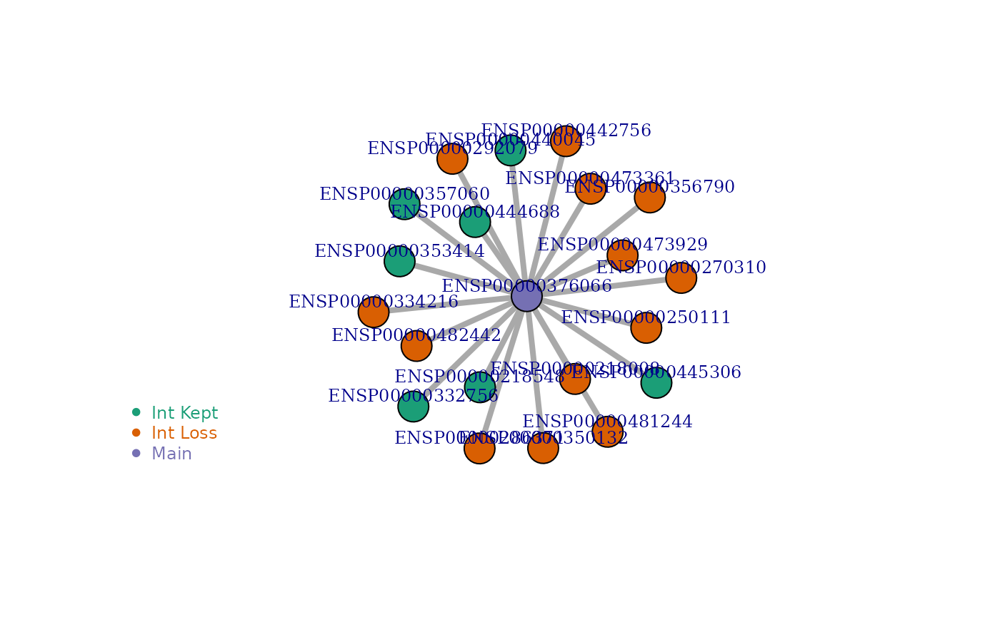

MDT Switching Event and Its Functional Impact
Detection of Most Dominant Transcript Switches and Their Functional Impact
Tülay Karakulak
2024-05-09
Source:vignettes/MDTToolset_switching-vignette.Rmd
MDTToolset_switching-vignette.RmdLoad MDTToolset
Prepare Input File
The following files are given together with the MDTToolset. If you would like to see how they are prepared, please see tutorial: Introduction to Most Dominant Transcripts.
cond1_mdts <- MDTToolset::cond1_mdts
cond2_mdts <- MDTToolset::cond2_mdts
cond1_ENST_ENSG_nonredundant <- MDTToolset::cond1_ENST_ENSG_nonredundant
cond2_ENST_ENSG_nonredundant <- MDTToolset::cond2_ENST_ENSG_nonredundant
# read MANE Select
ensg_enst_ensp_mane_v104 <- MDTToolset::ensg_enst_ensp_mane_v104
# prepare sequences and Mane select transcripts dataframe
ensg_enst_seq <- prepare_Seq(MDTToolset::Homo_sapiens.GRCh38.cdna.all, ensg_enst_ensp_mane_v104)
## Select transcripts having MANE ids
enst_mane_iso <- ensg_enst_ensp_mane_v104[!(is.na(ensg_enst_ensp_mane_v104$RefSeq.match.transcript..MANE.Select.) | ensg_enst_ensp_mane_v104$RefSeq.match.transcript..MANE.Select. == ''),c(1,2,3,4)]
# Select the only ENSTs having ENSP Protein IDs.
ensp_only <- ensg_enst_ensp_mane_v104[!ensg_enst_ensp_mane_v104$Protein.stable.ID == "",]Calculate MDT Switching Events in the Data
The switch_calculator() function identifies MDT
switching events in each sample by comparing it to a “Normal” cohort or
another specified cohort, thereby defining dMDT (disease-specific MDTs).
It considers the following criteria:
- cutoff: The percentage of samples in the comparison group (cond2 in our case) that may have the same MDT as the Normal cohort. A cutoff of 0 is very stringent and ensures that the dMDT is not observed in any of the samples from cond2.
- cutoff_rate: The enrichment rate between Transcript 1 and Transcript 2 in the cond1_mdts and cond2_mdts datasets.
- cutoff_other_MDTs: The percentage of cond2 samples having another MDT for the same gene.
# Calculate switches in condition 1 compared to condition 2
Cond1_Cond2_Switches <- switch_calculator(cancer_ori = cond1_mdts, gtex_ori = cond2_mdts, exp_values_pcawg = cond1_ENST_ENSG_nonredundant, exp_values_gtex = cond2_ENST_ENSG_nonredundant, ensp_sequences = ensg_enst_seq, ensp_only = ensp_only, cutoff = 0, cutoff_rate = 2, cutoff_other_MDTs = 50)
# visalize the results. Note that you should have knitr R package installed.
knitr::kable(head(Cond1_Cond2_Switches,5), caption = 'MDT Switching Events')| SampleID | ENSG | dMDT | ENST2_cancer | TPM1_cancer | TPM2_cancer | enrichment | p_value | relative_cancer_exp | relative_gtex_exp | MDT_GTEx | adj_p |
|---|---|---|---|---|---|---|---|---|---|---|---|
| tpm_kallisto_macular_retina-1 | ENSG00000020256 | ENST00000346617 | ENST00000216923 | 3.342410 | 1.644050 | 2.033034 | 0.0002441 | 0.3602014 | 0.1078287 | ENST00000216923 | 0.0002604 |
| tpm_kallisto_macular_retina-1 | ENSG00000062282 | ENST00000605099 | ENST00000228027 | 0.936847 | 0.345076 | 2.714901 | 0.0002441 | 0.6704946 | 0.0000000 | ENST00000376262,ENST00000228027 | 0.0002604 |
| tpm_kallisto_macular_retina-1 | ENSG00000070669 | ENST00000422745 | ENST00000455086 | 13.171600 | 6.408810 | 2.055233 | 0.0002441 | 0.2935822 | 0.0937156 | ENST00000455086 | 0.0002604 |
| tpm_kallisto_macular_retina-1 | ENSG00000083454 | ENST00000345901 | ENST00000552456 | 5.319620 | 1.283410 | 4.144911 | 0.0002441 | 0.6319887 | 0.0000000 | ENST00000552456 | 0.0002604 |
| tpm_kallisto_macular_retina-1 | ENSG00000089597 | ENST00000356638 | ENST00000346178 | 48.838600 | 19.508100 | 2.503504 | 0.0002441 | 0.5505801 | 0.2352723 | ENST00000346178 | 0.0002604 |
Calculate Functional Impact of Transcript Switches by Integrating the Transcript Interaction Network
Isoform Interaction Network
Different transcripts of a gene can have varying exons, leading to changes in protein domains. These changes may disrupt interactions with protein interaction partners. To understand the functional impact of these switching events, we incorporate the transcript interaction network into the switching results. MDTToolset provides Isoform Network, IsoNetwork_v12, which is based on STRING v12. This network has the following columns. ENSG: Ensembl gene ID ENSP: Ensembl protein ID ENST: Ensembl transcript ID STRINGensp: STRING protein ID, considered canonical STRINGintN: Number of proteins STRINGensp interacts with in the STRING database ExistIntN: Number of interactions ENST is involved in MissIntN: Number of interactions ENST has lost RelMissIntN: Percentage of interaction loss ExistInts: Existing interactions of ENST MissInts: Lost interactions of ENST
IsoNetwork_v12 <- MDTToolset::IsoNetwork_v12_subsetData
knitr::kable(head(IsoNetwork_v12,5), caption = 'Isoform Interaction Network')| ENSG | ENSP | ENST | STRINGensp | STRINGintN | ExistIntN | MissIntN | RelMissIntN | ExistInts | MissInts | |
|---|---|---|---|---|---|---|---|---|---|---|
| 2507 | ENSG00000017260 | ENSP00000432956 | ENST00000533801 | ENSP00000421326 | 39 | 6 | 1 | 0.143 | PF00122:E1-E2_ATPase:167-362:PF03381:CDC50:ENSP00000230461:402:1,PF00122:E1-E2_ATPase:167-362:PF00122:E1-E2_ATPase:ENSP00000263519:599:1,PF00122:E1-E2_ATPase:167-362:PF00122:E1-E2_ATPase:ENSP00000349877:425:1,PF00122:E1-E2_ATPase:167-362:PF00122:E1-E2_ATPase:ENSP00000350310:600:1,PF00122:E1-E2_ATPase:167-362:PF00122:E1-E2_ATPase:ENSP00000353414:629:1,PF00122:E1-E2_ATPase:167-362:PF00122:E1-E2_ATPase:ENSP00000392043:631:1 | PF00689:Cation_ATPase_C:760-932:PF05366:Sarcolipin:ENSP00000435380:413:1 |
| 2573 | ENSG00000018625 | ENSP00000376066 | ENST00000392233 | ENSP00000354490 | 102 | 7 | 13 | 0.650 | PF00122:E1-E2_ATPase:161-352:PF00122:E1-E2_ATPase:ENSP00000218548:725:1,PF00122:E1-E2_ATPase:161-352:PF00122:E1-E2_ATPase:ENSP00000332756:414:1,PF00122:E1-E2_ATPase:161-352:PF00122:E1-E2_ATPase:ENSP00000353414:421:1,PF00122:E1-E2_ATPase:161-352:PF00122:E1-E2_ATPase:ENSP00000357060:936:1,PF00122:E1-E2_ATPase:161-352:PF00122:E1-E2_ATPase:ENSP00000440045:873:1,PF00122:E1-E2_ATPase:161-352:PF00122:E1-E2_ATPase:ENSP00000444688:978:1,PF00122:E1-E2_ATPase:161-352:PF00122:E1-E2_ATPase:ENSP00000445306:936:1 | PF00689:Cation_ATPase_C:796-1005:PF00287:Na_K-ATPase:ENSP00000218008:960:1,PF00689:Cation_ATPase_C:796-1005:PF00287:Na_K-ATPase:ENSP00000250111:993:1,PF00689:Cation_ATPase_C:796-1005:PF02038:ATP1G1_PLM_MAT8:ENSP00000270310:599:1,PF00689:Cation_ATPase_C:796-1005:PF00287:Na_K-ATPase:ENSP00000286371:978:1,PF00689:Cation_ATPase_C:796-1005:PF02038:ATP1G1_PLM_MAT8:ENSP00000292079:978:1,PF00689:Cation_ATPase_C:796-1005:PF00287:Na_K-ATPase:ENSP00000334216:770:1,PF00689:Cation_ATPase_C:796-1005:PF04272:Phospholamban:ENSP00000350132:860:1,PF00689:Cation_ATPase_C:796-1005:PF00287:Na_K-ATPase:ENSP00000356790:996:1,PF00689:Cation_ATPase_C:796-1005:PF02038:ATP1G1_PLM_MAT8:ENSP00000442756:709:1,PF00689:Cation_ATPase_C:796-1005:PF02038:ATP1G1_PLM_MAT8:ENSP00000473361:558:1,PF00689:Cation_ATPase_C:796-1005:PF02038:ATP1G1_PLM_MAT8:ENSP00000473929:583:1,PF00689:Cation_ATPase_C:796-1005:PF02038:ATP1G1_PLM_MAT8:ENSP00000481244:946:1,PF00689:Cation_ATPase_C:796-1005:PF02038:ATP1G1_PLM_MAT8:ENSP00000482442:453:1 |
| 91915 | ENSG00000204427 | ENSP00000418331 | ENST00000477462 | ENSP00000379282 | 56 | 0 | 12 | 1.000 | - | PF00561:Abhydrolase_1:280-410:PF00561:Abhydrolase_1:ENSP00000247706:448:1,PF00561:Abhydrolase_1:280-410:PF12146:Hydrolase_4:ENSP00000250974:560:1,PF00561:Abhydrolase_1:280-410:PF00561:Abhydrolase_1:ENSP00000268129:571:1,PF00561:Abhydrolase_1:280-410:PF00561:Abhydrolase_1:ENSP00000273359:541:1,PF00561:Abhydrolase_1:280-410:PF12697:Abhydrolase_6:ENSP00000273596:461:1,PF00561:Abhydrolase_1:280-410:PF12697:Abhydrolase_6:ENSP00000289119:649:1,PF00561:Abhydrolase_1:280-410:PF12146:Hydrolase_4:ENSP00000302657:415:1,PF00561:Abhydrolase_1:280-410:PF00561:Abhydrolase_1:ENSP00000326491:501:1,PF00561:Abhydrolase_1:280-410:PF00561:Abhydrolase_1:ENSP00000336693:577:1,PF00561:Abhydrolase_1:280-410:PF00561:Abhydrolase_1:ENSP00000365063:589:1,PF00561:Abhydrolase_1:280-410:PF00561:Abhydrolase_1:ENSP00000365725:855:1,PF00561:Abhydrolase_1:280-410:PF00561:Abhydrolase_1:ENSP00000414558:545:1 |
| 1 | ENSG00000000003 | ENSP00000362111 | ENST00000373020 | ENSP00000362111 | 17 | 0 | 0 | - | - | - |
| 2 | ENSG00000000003 | ENSP00000482130 | ENST00000612152 | ENSP00000362111 | 17 | 0 | 0 | - | - | - |
# read where the Pfam
ENSG_ENST_ENSP_Pfam <- MDTToolset::ENSG_ENST_ENSP_PfamCalculate the Functional Impact
To understand if the interaction partners of ENSTs (lost or kept) are
expressed in the sample, we implemented a function
buildIsoNet() which takes four inputs:
dMDT_network_info: Merged database: switching results and
Isoform Network ensembl_data: ENSG_ENST_ENSP_Pfam
kallisto_counts: cond1_ENST_ENSG_nonredundant
iso_network: IsoNetwork_v12
# we first merge the switching results with Isoform Network
dMDTs_IsoNetwork <- merge(Cond1_Cond2_Switches, IsoNetwork_v12, by.x='dMDT', by.y='ENST')
dMDTs_IsoNetwork_int <- dMDTs_IsoNetwork[dMDTs_IsoNetwork$MissInts != '-' | dMDTs_IsoNetwork$ExistInts != '-',]
Switching_Events_Network <- buildIsoNet(dMDT_network_info = dMDTs_IsoNetwork_int, ensembl_data = ENSG_ENST_ENSP_Pfam, kallisto_counts = cond1_ENST_ENSG_nonredundant, iso_network = IsoNetwork_v12)
knitr::kable(head(Switching_Events_Network,2), caption = 'Interaction Lost of dMDTs')| dMDT | SampleID | ENSG.x | ENST2_cancer | TPM1_cancer | TPM2_cancer | enrichment | p_value | relative_cancer_exp | relative_gtex_exp | MDT_GTEx | adj_p | ENSG.y | ENSP | STRINGensp | STRINGintN | ExistIntN | MissIntN | RelMissIntN | ExistInts | MissInts | ensp_expressed_missed | ensp_expressed_kept | ensp_expressed_missed_in_sample | int_losts_in_mdt | |
|---|---|---|---|---|---|---|---|---|---|---|---|---|---|---|---|---|---|---|---|---|---|---|---|---|---|
| 3 | ENST00000477462 | tpm_kallisto_macular_retina-2 | ENSG00000204427 | ENST00000496579 | 0.517667 | 0.171691 | 3.015109 | 0.0002441 | 0.609764 | 0 | ENST00000395952,ENST00000482224 | 0.0002604 | ENSG00000204427 | ENSP00000418331 | ENSP00000379282 | 56 | 0 | 12 | 1.000 | - | PF00561:Abhydrolase_1:280-410:PF00561:Abhydrolase_1:ENSP00000247706:448:1,PF00561:Abhydrolase_1:280-410:PF12146:Hydrolase_4:ENSP00000250974:560:1,PF00561:Abhydrolase_1:280-410:PF00561:Abhydrolase_1:ENSP00000268129:571:1,PF00561:Abhydrolase_1:280-410:PF00561:Abhydrolase_1:ENSP00000273359:541:1,PF00561:Abhydrolase_1:280-410:PF12697:Abhydrolase_6:ENSP00000273596:461:1,PF00561:Abhydrolase_1:280-410:PF12697:Abhydrolase_6:ENSP00000289119:649:1,PF00561:Abhydrolase_1:280-410:PF12146:Hydrolase_4:ENSP00000302657:415:1,PF00561:Abhydrolase_1:280-410:PF00561:Abhydrolase_1:ENSP00000326491:501:1,PF00561:Abhydrolase_1:280-410:PF00561:Abhydrolase_1:ENSP00000336693:577:1,PF00561:Abhydrolase_1:280-410:PF00561:Abhydrolase_1:ENSP00000365063:589:1,PF00561:Abhydrolase_1:280-410:PF00561:Abhydrolase_1:ENSP00000365725:855:1,PF00561:Abhydrolase_1:280-410:PF00561:Abhydrolase_1:ENSP00000414558:545:1 | Not_expressed,Not_expressed,Not_expressed,Not_expressed,Not_expressed,Not_expressed,Not_expressed,Not_expressed,Not_expressed,Not_expressed,Not_expressed,Not_expressed | No kept int | Not_expressed,Not_expressed,Not_expressed,Not_expressed,Not_expressed,Not_expressed,Not_expressed,Not_expressed,Not_expressed,Not_expressed,Not_expressed,Not_expressed | MDT_is_not_found |
Visualize Network of Interaction Lost
visualize_network() function will take two inputs: ENSP
id, and Isoform Network, IsoNetwork_v12. And it gives a graph showing
the network of the protein (of transript of interest) using igraph R
package.
Example 2: Some interactions are lost while some are kept
visualize_network('ENSP00000432956', IsoNetwork_v12)#> NULL
visualize_network('ENSP00000376066', IsoNetwork_v12)
#> NULLCheck Expression Level of dMDT:MDT in the sample
plotExpression('ENST00000346617', 'ENST00000216923', 'tpm_kallisto_macular_retina-1', cond1_ENST_ENSG_nonredundant, cond2_ENST_ENSG_nonredundant)